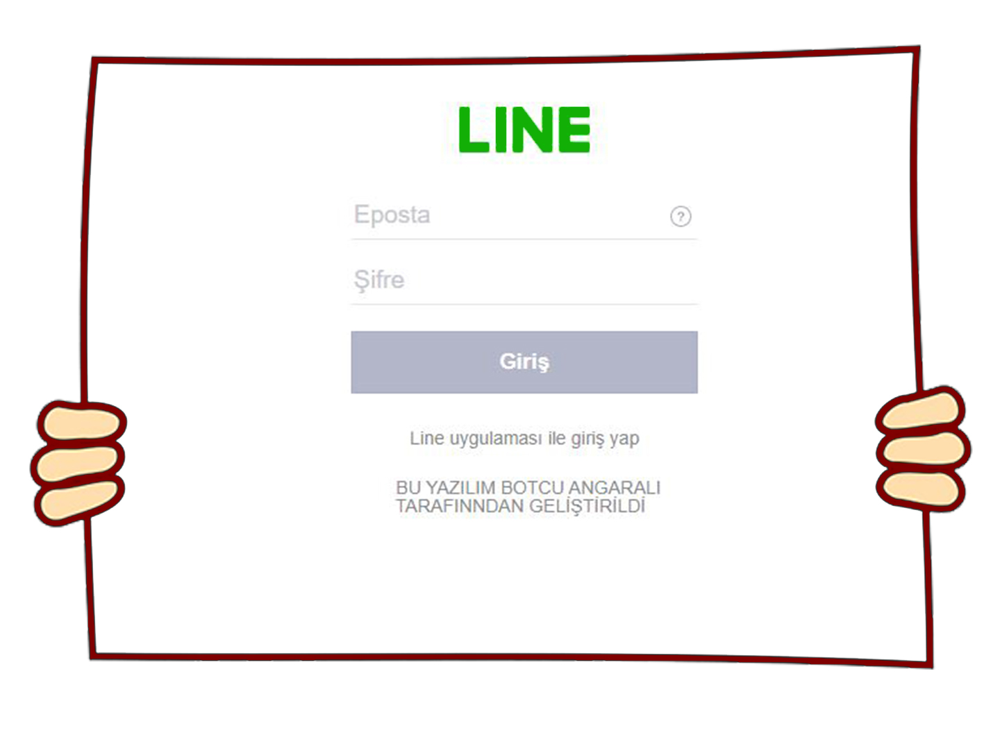
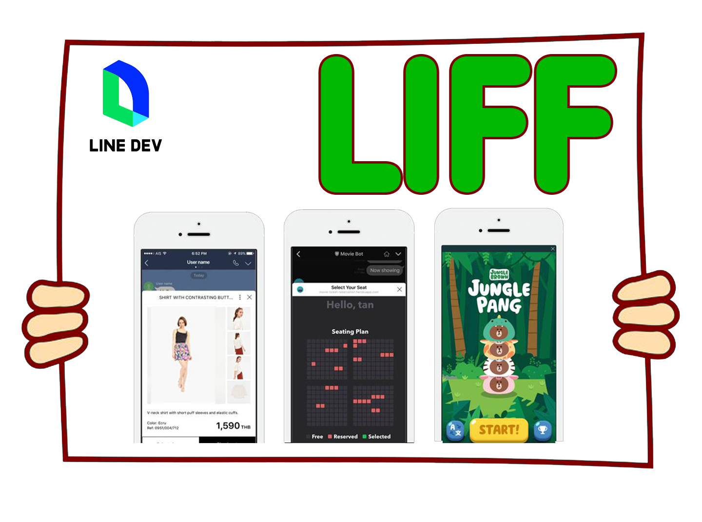
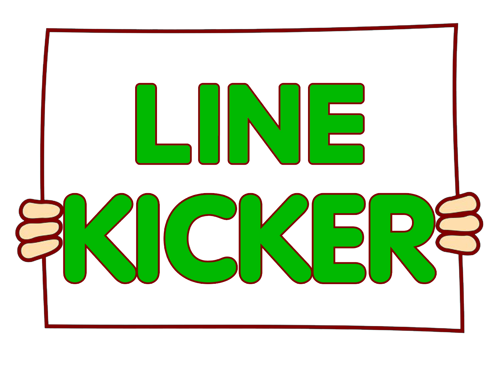

ÇALIŞMALARIM



LİNE KİCKER
İTS ALSO AN APP BASED ON LİNE APLİCATİON THAT CAN BE USED TO KİCK MEMBERS OF GROUPS.
Check it out!ALL OF ME JUST CONTACT
ALL OF NEW PROJECTS WILL BE PUBLISHED OVER HERE PLEASE STAY WITH US.
BİZE ULAŞIN!